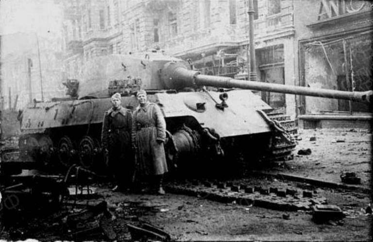
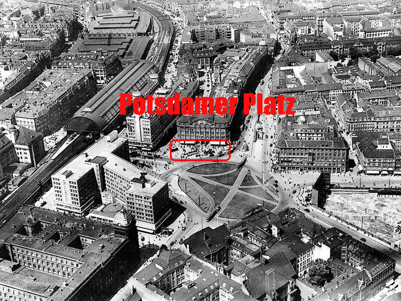

Obrana berlínskej citadely
Obrana Berlína bola zredukovaná na malý ostrov, tzv. citadelu.
Na tento ostrov viedlo celkovo 249 mostov, z ktorých len polovica bola podkopaná.
Nejde o hlúpu náhodu, nemecké vedenie urobilo všetko pre to,
aby mesto padlo čo najrýchlejšie. Nikto už neveril vo víťazstvo vo vojne,
chceli čo najskôr prehrať a dostať sa do amerického zajatia.
Ale Karl-Hanz Turk to nevedel,
mal rozkazy a tie do poslednej chvíle plnil.
Jeho Kráľovský tiger bol mnohokrát opravovaný, ale nikdy nebol zničený.
Sovietskym vojakom sa ho podarilo zajať až vtedy,
keď ho Turk sám opustil a odchádzal na prielom z Berlína.
A práve teraz vám poviem o jeho posledných dňoch.

Kráľovský Tiger
Kráľovský Tiger bol vrcholom nemeckého tankového priemyslu.
Ani najnovšie tanky IS ho nedokázali zasiahnuť do boku a v čelnej oblasti bol úplne nezastaviteľný.
Kráľovský Tiger s číslom 101 začal svoju vojnu v Berlíne obranou mostov v oblasti Ríšskej banky.
Používal sa ako zátaras v miestach, kde by sovietske tanky prerazili.
Kráľovský tiger vybojoval svoju poslednú bitku na Postdamer Platz.
Rozkaz znel: "Obsadiť oblasť, aby ste mohli diskrétne pokryť celú oblasť."
Vtedy sa nachádzal na mieste, kde sa nachádzal. Znie to optimisticky,
obrovský Tiger v širokom priestore. Ale nebolo na výber,
Turek tam išiel a zaujal pozíciu pri múre, ktorý ho kryl z jednej strany.
Dovtedy sa jeho Tiger opravoval, ale problémy s podvozkom sa nedali úplne odstrániť.
Tiger bol nepohyblivým cieľom a v prípade útoku nemohol sám odísť.

Koniec bitky
Do 1. mája 1945 došla tigrovi munícia a veliteľ tanku nemal informácie o tom, kde ju doplniť.
Potom sa rozhodol ísť na stanicu metra a zistiť situáciu v meste. Nemohol sa však vrátiť k svojmu tanku.
Námestie bolo obsadené a tank bol vyradený z činnosti. Nakoniec Tiger nikdy nebol zničený,
dokázal zadržať nápor tisícov tankov Červenej armády, ale padol kvôli vyčerpanej munícii.